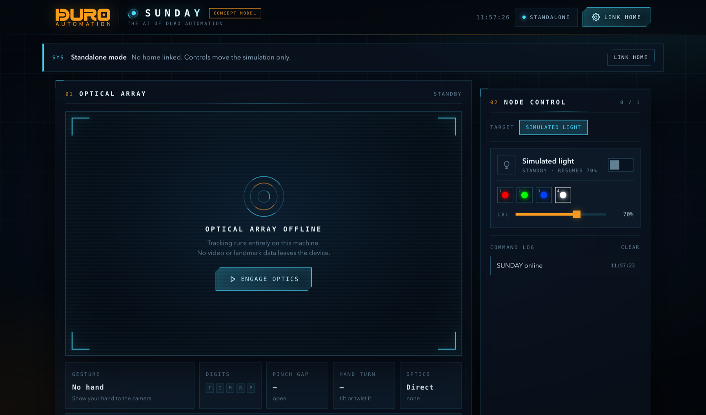
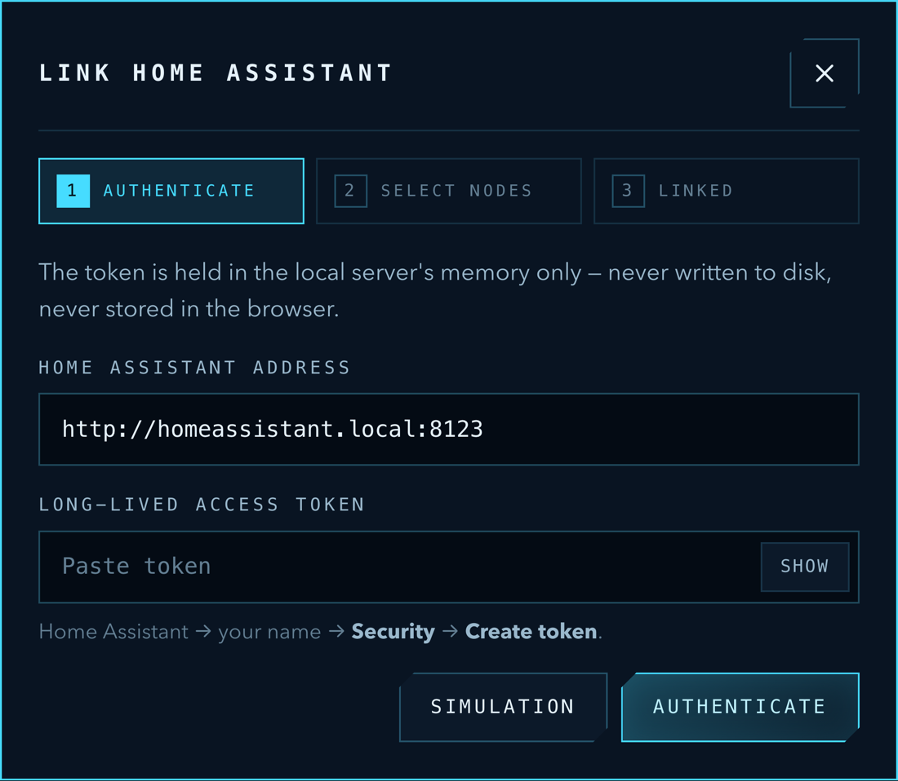

Control the lights in your home with your bare hand. One camera. No cloud. Nothing leaves the room.
Setup and modification guide — written for someone who has never
written a line of code.
DURO Automation
Concept and direction — Hareesh Narayanan
Contents
What this guide covers
Read it in order the first time. Everything is here — nothing assumed.
01
How it worksFour pieces in a line
02
What you needHardware, software, time
03
Step one — Home AssistantThe brain that talks to your bulbs
04
Step two — Run SUNDAYThree commands
05
Step three — Link your homeThe token and your lights
06
The gesturesEvery pose and what it does
07
How this was builtWith Claude Code, in four layers
08
Make it yoursChanging it with an AI agent
09
Ten prompts to copyPaste, adjust, done
10
If something goes wrong
11
Limits and credit
Start here
SUNDAY does not know anything about bulbs. It only knows how to say "set that light to 60% and
make it red" to a piece of free software called Home Assistant, which does the actual
switching.
So the order matters. Get Home Assistant working with your lights first. Only then bring in the
camera. If a light works in Home Assistant it will work in SUNDAY — and if it does not, nothing you
change in SUNDAY will help.
Time to expect
Home Assistant from scratch, lights added and tested — 45 to 90 minutes, once.
SUNDAY itself, once Home Assistant works — 10 minutes.
Your first change with an AI agent — 5 minutes.
01
How it works
Four pieces in a line. Nothing more mysterious than that.
SUNDAY is a web page that watches your hand through a webcam and turns what it sees into commands
for your smart lights. There is no wake word, no app and no account. Every decision is made on the
computer you start it on, and camera frames never leave the page — they are not uploaded,
recorded or sent to any company, including us.
Figure 1 — from your hand to the bulb
Piece
What it does
In practice
Your webcam
Produces pictures, around thirty every second.
A laptop camera or any USB webcam. Nothing special.
The hand tracker
Finds 21 points on your hand in every picture — wrist, knuckles, fingertips.
A Google machine-learning model. A copy sits inside the project folder, so it works with the
Wi-Fi switched off.
The gesture brain hand-model.js
Turns those 21 points into meaning. Is that finger straight? Is this a fist? How far has the
wrist turned?
The part that was actually built here. Pure geometry — angles and distances — not another
AI model.
Home Assistant
Speaks the language of your real bulbs and does the switching.
Free, open-source, runs on your own network. Section 03.
Figure 2 — the 21 points the tracker reports, every frame
Why it feels solid rather than twitchy
A single camera frame is never trusted. A command only fires when four of the last five frames
agree, the pose has been held still for a set time, and your fingers have actually
stopped moving. That is why opening your hand to switch the lights on does not accidentally
fire "three fingers means blue" on the way past.
Every one of those small numbers lives in one place, and section 07 shows you how to change them.
02
What you need
Most people already have the first three.
Hardware
Thing
Needed
Notes
A computer
Yes
Mac, Windows or Linux. A laptop from the last six or seven years is plenty.
A webcam
Yes
The built-in one works. A USB webcam you can aim at where you stand is better.
Smart lights
Yes
Hue, WiZ, Tuya, Tapo, IKEA, Zigbee, Z-Wave, Shelly — all fine. For the full effect you want
bulbs that change colour and brightness.
Somewhere to run Home Assistant
Yes
A Raspberry Pi, an old laptop, a mini PC, a NAS — or the same computer you run SUNDAY on.
A hub or bridge
Maybe
Only if your bulbs need one. Wi-Fi bulbs need none.
Software
Thing
Cost
Why
Home Assistant
Free
Talks to your bulbs.
Node.js, version 18+
Free
Runs the small local server that serves the page.
A modern browser
Free
Chrome, Edge, Brave or Safari. It needs camera permission.
An AI coding agent
Free tiers exist
Only if you want to change how it behaves.
Skills
None. You will copy a few lines into a terminal window, and every one of them is printed in this
guide. If you later want to change how SUNDAY behaves, you will describe the change in plain English
to an AI agent and it will write the code for you. You never have to read JavaScript.
Opening a terminal
Mac — press ⌘Space, type Terminal, press Enter. Windows — press Win, type PowerShell, press Enter.
03
Step one — Home Assistant
The longest part of the project, and the part that is worth it on its own.
Skip to section 04 if you already run it.
Home Assistant is free software that sits on your home network and controls your devices locally —
a universal remote every brand has to obey. Four ways to install it. Pick one.
Route
Difficulty
Who it suits
Home Assistant Green (buy the box)
Easiest
You want it to simply work. Plug in power and Ethernet. Costs money.
Raspberry Pi 4 or 5
Easy
The classic route. Write an image to a card, plug it in, leave it running.
A virtual machine
Medium
You have a spare computer and want to try it without buying anything.
Docker
Medium
You already use Docker. Fast — but this variant does not support Add-ons.
Whichever you choose, follow home-assistant.io/installation — that page stays current and
this guide will not. The Raspberry Pi route looks like this:
Install Raspberry Pi Imager from raspberrypi.com/software.
Under Choose OS, pick Other specific-purpose OS → Home assistants → Home Assistant,
then write it to your card. This erases the card.
Put the card in the Pi, connect it to your router by Ethernet, power it on, and wait —
the first boot can take twenty minutes.
Open http://homeassistant.local:8123. If that does not load, find the Pi's address
in your router's device list and use http://THAT-IP:8123.
Create your account. This is your own server, not a cloud login.
Now add your lights
Home Assistant calls each controllable thing an entity, with an ID like
light.living_room. Getting your bulbs to appear as entities is the goal here.
Go to Settings → Devices & services. Many bulbs appear by themselves under
Discovered — if yours are there, click Configure.
If not, click Add integration and type your brand — Philips Hue, WiZ,
Tuya, Tapo, Shelly, Zigbee Home Automation.
Open the Entities tab and search light. Your bulbs should be listed.
Test every one from inside Home Assistant. Switch it on. Change the brightness. Change
the colour.
Do not skip that last step
Nearly every "SUNDAY doesn't work" message comes down to a light that could not be controlled
from Home Assistant in the first place. If the colour wheel does nothing, your bulb is white-only
and no gesture can give it colour. If brightness does nothing, it is not dimmable. Far better to
learn that now.
Keep two things to hand for section 05 — the address of Home
Assistant including its port (http://192.168.1.25:8123), and the entity IDs of the
lights you want to control.
04
Step two — Run SUNDAY
Ten minutes. Three commands.
Install Node.js
Go to nodejs.org, download the LTS version, run the installer, accept the defaults.
Then open a terminal and check it with node -v — you should see something like
v22.11.0. Anything 18 or above is fine. If it says "command not found", close the
terminal, open a fresh one and try again.
Get the project and start it
Open the link sent with this guide, press the green Code button, choose Download ZIP
and unzip it. Then in the terminal:
cd "the folder you just unzipped"
node server.mjs
It prints the address it is serving on — normally http://127.0.0.1:8000. Open that in
your browser. If port 8000 is busy it moves to the next free one and tells you which; to force a
particular one, use PORT=9000 node server.mjs.
Leave that terminal open
node server.mjs runs for as long as you want to use SUNDAY. Closing the window stops
the server and the page stops working. To stop it on purpose, click the terminal and press
CtrlC.
Engage optics
On the page, click Engage optics and allow camera access when the browser asks. Hold up a
hand — you should see a skeleton drawn over it.

Figure 3 — what you see when it opens, before the camera starts
You can stop here and try everything in simulation. With no home linked, SUNDAY runs a demo
set of lights on screen, so you can learn the gestures before wiring anything real.
Getting clean tracking
Do this
Because
Hold your hand about an arm's length away
Closer and it leaves the frame; further and the fingers blur together.
Palm toward the lens, whole hand visible
The tracker needs all 21 points. A hand seen edge-on loses its fingers.
Keep some light on your hand
SUNDAY brightens a dark frame up to 3.2×, but it cannot invent light that is not there.
Avoid a bright window behind you
Backlight turns your hand into a silhouette.
Either hand works
The thumb is deliberately left out of the finger count, so left and right read identically.
The Optics readout shows what the camera correction is doing. A room lit bright red at full
brightness clips the sensor, so SUNDAY pulls the saturation down and, if it is still losing you, goes
monochrome. That is normal and it recovers on its own.
05
Step three — Link your home
One token, one address, up to eight lights.
Create the access token
Open Home Assistant.
Click your name at the bottom of the left sidebar.
Open the Security tab and scroll to Long-lived access tokens.
Click Create token and name it SUNDAY.
Copy it now. Home Assistant shows a token exactly once. If you lose it, delete it and
make another.
Paste it in
On the SUNDAY page, click Link home.
Enter the address — http://192.168.1.25:8123. Nothing after the port number.
Paste the token and connect.
Tick the lights you want to control, up to eight.

Figure 4 — three steps: authenticate, pick your lights, done
Where your token goes
It is held in the memory of the small server running on your own machine. It is never
written to disk, never logged, and never handed back to the browser. Only the address is remembered,
so the form is prefilled next time. Clicking Unlink, or stopping the server, erases it.
That server also refuses requests from any other machine, and will only ever send three commands —
switch on, switch off, toggle — and only to the entities you ticked.
Figure 5 — the token never reaches the browser
If linking fails
What it says
What to do
Rejected the access token
Wrong, expired or revoked. Create a new one.
The name could not be found
homeassistant.local is not resolving. Use the IP address.
Refused the connection
Wrong port. Home Assistant is normally on 8123.
Did not answer in time
Wrong address, or you are on a different network — guest Wi-Fi, or a VPN.
REST API was not found
You left an extra path on the address. Trim it to host and port.
Certificate could not be verified
On a home network use plain http://.
Local server not responding
node server.mjs is not running.
06
The gestures
One hand. Either hand. The thumb is never counted as a finger, so left and right read identically.
Open palmLights on, at your last colour and levelhold 0.7 s
Turn it rightBrightercontinuous
Turn it leftDimmercontinuous
Closed fistEverything off, from any statehold 0.8 s
One fingerRedhold 0.6 s
Two fingersGreenhold 0.6 s
Three fingersBluehold 0.6 s
Four fingersWhitehold 0.9 s
PinchKnob on — now any hand shape turns iton contact
Open, pinch againKnob off0.2 s
Thumb up, heldBrightness climbsarms in 0.5 s
Thumb down, heldBrightness fallsarms in 0.5 s
The brightness knob
An open palm is the knob. Hold one up and turn it like a steering wheel — right brightens,
left dims. Nothing has to be switched on first.
The palm stays passive until you actually turn it, so showing one to switch the lights on
does not move the brightness.
Both kinds of turning count — tilting the hand like a steering wheel, and twisting the
wrist like a doorknob. People mean different things by "rotate your hand".
It is relative. The knob picks up whatever level the lights are already at, so turning
back to where you started returns the brightness you started with.
A 60° turn covers the whole range, on a curve — gentle at first, stronger the further you
go. Ten degrees moves it about 9%.
It will not switch the light off. The floor is 2%.
A blink in tracking does not drop it. It releases itself after 2.4 seconds with no hand in frame.
Figure 6 — how far you turn, and what it does
What the pinch is for
The knob normally wants an open palm. Pinch once and you can keep turning the brightness with your
hand in any shape, which is more comfortable for long adjustments. Open your hand and pinch
again to stop. The live gap between your fingertips is printed between them on a 0–100 scale, so you
can watch a pinch closing rather than guess at it.
While the knob is turning, colour commands are ignored — that is the only thing it
suppresses. A closed fist always works, locked or not, mid-turn or not. Nothing in this project
is allowed to leave you unable to switch your own lights off.
Colour
1 finger · Red255, 0, 0
3 fingers · Blue0, 64, 255
2 fingers · Green0, 255, 0
4 fingers · Whitewhite LED / 5000 K
All four colours share one brightness. The level belongs to the room, not to the colour, so
going 1–2–3–4 recolours the light you already have without changing how bright it is. White uses a
dedicated white LED if your lamp has one, otherwise a neutral 5000 K, and only mixes red-green-blue
as a last resort — mixed white is dimmer and slightly tinted.
The colour code on screen
Colour
Meaning
Cyan
Tracking your hand. Knob off.
Green
Fingertips pinched.
Pale cyan
Pinch again to release.
Amber
Knob on — turn to dim.
The same four colours drive the hand overlay, the chip on the camera view and the edge of the stage,
so the state is readable out of the corner of your eye while you watch your own hand.
Keyboard, for when you would rather not wave
Every gesture also has a key and an on-screen button.
1234 colours 5 on
0 off Space knob Enter toggle power
→↑ brighter ←↓ dimmer
07
How this was built
The honest version, for everyone who asked. It was built by describing it in plain
English to Claude Code, in layers, over many rounds.
No part of this started as a plan on paper. It started as one sentence — "I want to control my
lights by moving my hand in front of a webcam, with nothing going to the cloud" — typed into an
AI coding agent, and then corrected a few hundred times until it felt right.
The setup
Install Node.js from nodejs.org.
Install Claude Code and open an empty folder with it:
npm install -g @anthropic-ai/claude-code
mkdir gesture-home && cd gesture-home
claude
Type the first instruction. That is the entire setup.
Built in four layers, in this order
The order is the important part. Each layer was made to work properly before the next one started,
so there was never more than one thing that could be wrong.
Figure 7 — each layer was made to work before the next one started
Layer
Roughly what was asked for
1
See the hand
"Build a web page that opens my webcam and draws the hand skeleton on top of it using
MediaPipe hand landmarks. Keep the model files in the project folder so it works offline.
No lights yet."
2
Understand the hand
"Now put the hand geometry in its own file with no screen code in it. Work out whether each
finger is extended using joint angles and how far the tip reaches from the wrist, so a rotated
or mirrored hand reads the same. Show me the finger count on screen."
3
Make it steady
"A single bad frame must never reach anything. Require four of the last five frames to
agree, require the pose to be held still, and don't let a command fire while my fingers are
still moving."
4
Connect real lights
Section below.
Connecting it to Home Assistant
This is the part most people want, and it is simpler than it looks. Home Assistant has a web API.
You create one token, and anything holding that token can control your house — which is exactly why
the token is not allowed anywhere near the browser.
In Home Assistant, profile → Security → Create token. Copy it once.
Ask the agent for a small local server that keeps the token and does the talking.
The actual request was close to this:
Write a small Node server with no dependencies that serves these files and
proxies Home Assistant. It takes my token in memory only — never write it to
disk, never log it, never send it back to the browser. It must refuse requests
from any machine but this one, allow only turn_on, turn_off and toggle, and
only on the entities I explicitly selected.
Then the page side: "Let me paste my Home Assistant address and token in a dialog, fetch the
list of light entities, and let me tick up to eight of them."
Finally, wire the gestures to those lights — open palm on, fist off, finger counts to colours,
wrist rotation to brightness.
Why the server exists at all
A web page cannot be trusted with a token that controls your home. Putting it in a server on your
own machine means the browser never sees it, and the server can refuse anything that is not one of
three harmless commands on a list of lights you chose yourself. Ask for that shape of design
explicitly — an agent will happily do the easy, unsafe thing if you do not.
The loop that actually mattered
Writing the first version took an evening. Making it feel right took far longer, and it was
all the same loop:
Stand in front of the camera and use it.
Describe what felt wrong in ordinary words — not in code terms.
"The lights jump across the room when my wrist wobbles.""My pinch does nothing unless I let go quickly.""When I open my hand to switch on, it comes on blue."
Let the agent find the cause and propose a fix. Make it explain the fix first.
Try it again. Keep it or throw it away with git checkout .
Almost every number in this project — 60° for the full brightness range, 620 ms before a colour
fires, four frames out of five — came out of that loop, not out of a plan.
The two habits that made the difference
Write down what failed. The README in the project records the approaches that were tried
and abandoned, and why. That is not documentation for show — it is what stops an agent
confidently reintroducing a bug that was already fixed once.
Ask for tests on the parts that matter. There are two suites, 91 cases on gesture
recognition and 99 on the control logic. They exist because the same bug kept coming back, and
a test is the only thing that makes a fix permanent.
That is the whole method. Describe the behaviour you want in plain language, build one layer at a
time, test it with your own hand, and keep a record of what did not work. You can rebuild this
project — or something quite different — with nothing more than that.
08
Make it yours
Changing the project with an AI agent — no coding, but there is a method.
What an AI coding agent is
A program you hand a folder of code to, and then talk to in plain English. It reads the files
itself, makes the changes itself and runs the tests itself. Any of these will do:
Agent
Where you use it
Notes
Cursor
A code editor
Friendliest if you have never used a terminal. Install, open the folder, type in the chat panel.
Claude Code
Terminal or VS Code
What this project was built with. Strongest at "read everything first, then change one thing".
Copilot agent mode
Inside VS Code
Fine for small, clearly described edits.
Gemini CLI, Codex
Terminal
Also fine. The prompts overleaf are not specific to any one of them.
The quickest start
Install Cursor from cursor.com.
File → Open Folder, choose the project folder.
Press ⌘I (or CtrlI) for the agent panel.
Paste a prompt from section 09. Read what it proposes. Accept it.
Reload the page in your browser and try it.
A good first thing to type, before changing anything:
Read README.md, then app.js and hand-model.js, and explain in plain English how a
gesture becomes a command to a light. Do not change anything yet.
Set up the safety net first
Five minutes now saves an afternoon later. In the project folder:
git init
git add -A
git commit -m "working version before my changes"
Now if a change makes things worse, throw it away completely:
git checkout .
And when a change works, lock it in with git add -A then
git commit -m "what I changed". That is the whole safety net — you never need to
understand git beyond those four commands.
How to write an instruction that works
A weak prompt gets a weak change. A good one has four parts: what you want to happen, what
happens instead today, where to look, and how you will check it. Fill in the
blanks:
I want to change SUNDAY so that [what you want to happen].
Right now [what happens instead].
Read README.md first for the design reasoning, then make the smallest change that
achieves this. The relevant code is probably [file or setting, if you know it].
Rules:
- Change one thing only. Do not tidy up anything I did not ask about.
- A closed fist must still switch everything off from any state.
- Explain what you changed, in plain English, before I test it.
Four rules
One change at a time. Ask, test, commit, then ask for the next. Five changes at once means
five suspects when something breaks.
Point it at the README first. It records why every number is what it is, including
a dozen approaches that were tried and failed. An agent that reads it will not cheerfully
reintroduce a bug that was already fixed.
Make it explain before you accept. If the explanation does not make sense to you, the
change is probably wrong. "That doesn't sound right, explain it differently" is a perfectly
good thing to say to an agent.
Ask it to run the tests. There are two suites — 91 cases on gesture recognition, 99 on the
control logic. Say "run the test suites and show me the output."
The one thing never to change
A closed fist switches everything off, from any state, always. An early version made other
gestures inert while the knob was locked, and one stray pinch left someone unable to switch their
own lights off. If an agent proposes putting any condition on the fist, reject it.
Where to point it
To change…
Tell it to look at
The exact shade of each colour
COLORS in app.js
How far you turn your wrist for full brightness
ROLL.span in hand-model.js
A knob that is too twitchy, or too sluggish
ROLL.dead and ROLL.curve
How long a pose is held before it fires
HOLD_MS, COLOR_SETTLE_MS in app.js
A gesture that fires by accident
VOTE_AGREE, FINGER_STILL, REPEAT_MS
A pinch that is hard to trigger
LIMITS.pinchClose in hand-model.js
Which gestures are listed on screen
PROTOCOL in app.js
Adding a whole new hand pose
classify() in hand-model.js, then app.js
Controlling something that is not a light
the allowed-services list in server.mjs
Colours, fonts, the whole look
the variables at the top of styles.css
09
Ten prompts to copy
Paste one into your agent and change the words in brackets.
1 — Make the brightness knob calmer
In hand-model.js the knob response is the ROLL object. A small wrist wobble moves
the lights too far. Increase the slack and the span so it is calmer, keep the floor
at 2%, then print the new table of turn against brightness so I can see the effect.
2 — I have to turn my wrist too far
Reaching full brightness needs more wrist rotation than is comfortable. In
hand-model.js, reduce ROLL.span so a smaller turn covers the range, but keep the
curve gentle enough that a 10-degree turn still moves the lights less than 15%.
Then run the control test suite and show me the output.
3 — Change the colours
In app.js, the COLORS array holds the four colours sent to the lamp. Change them to
[warm orange, deep purple, soft pink, warm white]. Read the comments above COLORS
first — they explain why blue carries some green and why white prefers a dedicated
white LED over mixed RGB. Keep that reasoning intact for my new colours.
4 — Poses fire too slowly
Holding a pose feels sluggish. In app.js, reduce HOLD_MS and COLOR_SETTLE_MS by about
a quarter, but leave white longer than the other colours and leave the fist longest of
all. Explain why those two exceptions exist before you change anything.
5 — The lights come on in the wrong colour
Sometimes when I open my hand to switch the lights on, they come on in the wrong
colour. The README has a section called "Why the lights used to come on blue" that
diagnoses this. Read it, check the guards it describes are all still in place in
app.js, and tighten whichever one is letting this through. Tell me which it was.
6 — Add a new gesture
I want a new gesture: [describe the hand shape] should [describe what it does].
Work in this order and show me each step:
1. In hand-model.js, add the detection to classify(), in the same style as the
existing poses — angles and ratios, not screen positions, so it still reads the
same if my hand is rotated or mirrored.
2. Tell me which existing pose it is closest to, and what the margin is.
3. Add it to PROTOCOL in app.js with a glyph and a label.
4. Wire it up, and add a case to the classification tests.
7 — Control a fan, not just lights
I want to control a Home Assistant fan as well as lights. Right now server.mjs allows
only switch on, switch off and toggle, and only on the entities I ticked. Extend it to
allow the fan domain with fan.set_percentage, keeping every existing safety rule
exactly as it is. Then in app.js, let a selected fan be driven by the brightness knob
so turning my hand changes fan speed. Explain the security implications.
8 — Put my own branding on it
Change the look to my own branding. The palette is CSS variables at the top of
styles.css — replace the teal and orange with [#hex] and [#hex]. Rename the
assistant from SUNDAY to [NAME] everywhere in index.html and app.js, and swap the
logo for assets/[my-file.png]. Keep the contrast readable and keep the four HUD
state colours clearly distinct from one another.
9 — Explain it to me
I am not a programmer. Read hand-model.js and explain in plain English, with no
jargon, how the code decides whether a finger is extended, and why it uses two
separate tests instead of one.
10 — Work out why a gesture is dead
The [three-finger blue] gesture almost never fires for me, but everything else works.
Add a temporary debug readout to the screen showing, every frame: the raw finger count,
how long that count has been stable, the thumb-to-index gap, the fingertip movement
speed, and which guard is currently blocking a command. Then tell me what to watch for
when I try the gesture, so I can tell you which number is wrong.
Worth running before any change
"Before you change anything, read README.md and tell me whether what I am asking for was
already tried and rejected in this project, and why."
The README is unusually honest about its own dead ends. More than one obvious improvement is
recorded in there as a documented failure.
10
If something goes wrong
In rough order of how often it happens.
What you see
What it is
The page will not load
node server.mjs is not running, or you are on the wrong port. Read what the
terminal printed.
"Engage optics" does nothing
Camera permission was denied. Click the camera or lock icon in the address bar, allow it,
reload. Check no other app is holding the camera.
No skeleton appears on my hand
Too far, too close, too dark or backlit. Arm's length, palm to the lens, light on your hand.
Gestures are recognised but the lights do nothing
Home Assistant is not linked, or the entities are not ticked. Reopen Link home.
Brightness seems not to work in blue
Partly physics — a blue LED produces only about 7% of what your eye reads as brightness.
SUNDAY already compensates. If nothing moves at all, test that bulb's dimming in Home Assistant.
The fist does not switch off
Hold it slightly longer. It is deliberately the slowest pose, because it is the one
destructive action.
The lights come on in a colour I did not pick
Working as designed — it restores the colour and level you last used. Pick a colour while
they are on to change it.
The knob switches itself off mid-turn
Your hand left the frame for more than 2.4 seconds.
Everything got slow
Close other camera-heavy tabs. The correction works harder when it is losing you, and that
costs frames.
An AI change made it worse
In the project folder, run git checkout . to return to your last commit.
11
Limits and credit
What it is honestly good at, and what it is not.
Please read this one
This is a concept demo, not a certified accessibility, security or safety system.
Do not make it the only way to control anything that matters. Keep your wall switches and
keep the Home Assistant app on your phone. A camera that cannot see your hand is a remote that does
not work, and that is a bad thing to discover in the dark.
Does well
Does not do
One hand, either hand, rotated or mirrored
Runs with the internet off
Recovers from dark, bright and colour-washed rooms
Keyboard and on-screen equivalents for every gesture
Remembers your colour and level across reloads
Two hands at once
More than eight devices
Anything other than lights, out of the box
Working across a dark room
Anything over the internet — it is local by design
Privacy, plainly
The camera feed is processed inside your browser tab and is never uploaded, recorded or
transmitted. The hand-tracking model is a file in the project folder, not a web service. Your Home
Assistant token lives only in the memory of a server on your own machine and is erased when you stop
it. There is no account, no telemetry and no analytics anywhere in this project.
Use it, change it, show it
Take it apart. Rename it. Put your own logo on it. Film it. The only thing asked in return is that
you do not claim you built the original — and if you post it, a credit is appreciated.
SUNDAY — the AI of DURO Automation.
Concept and direction — Hareesh Narayanan.
The project folder and the latest version of this guide are at the link sent alongside it.